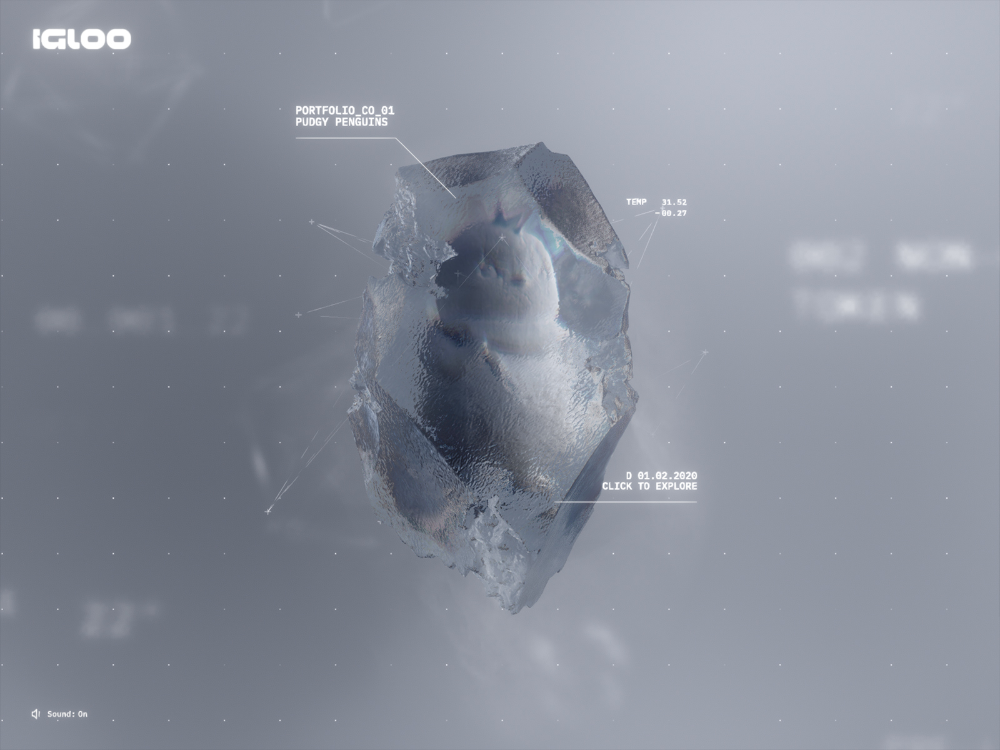
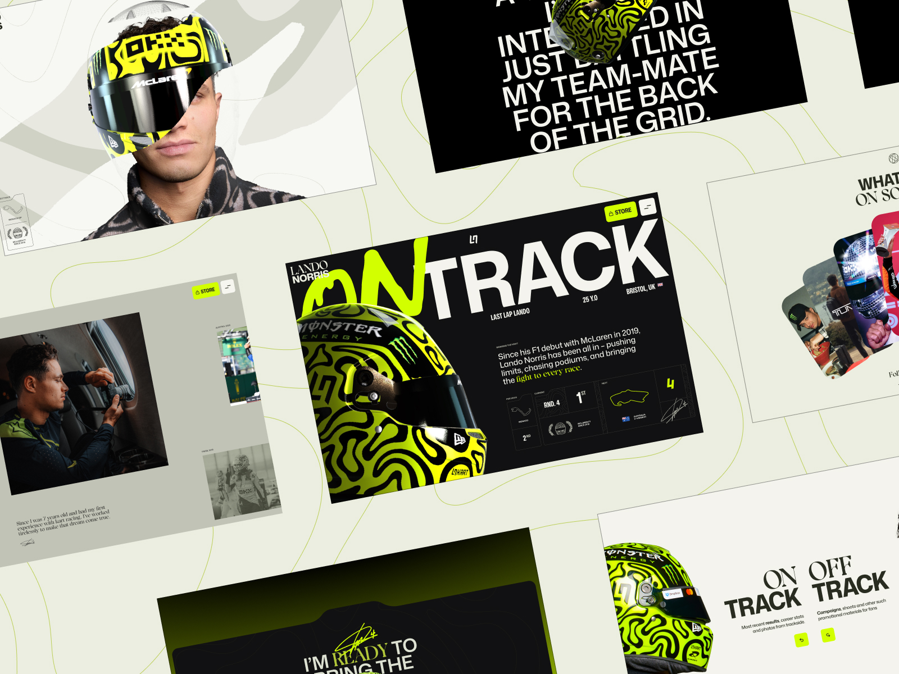
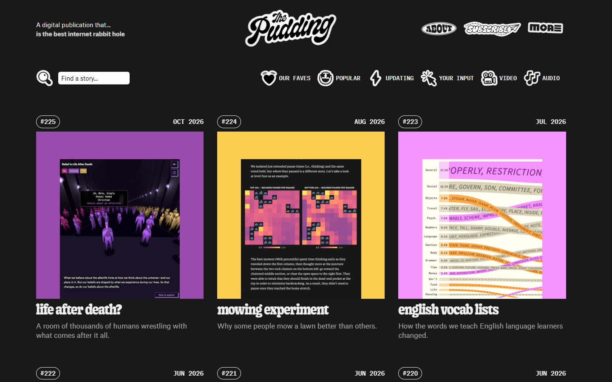

The position is a physical object you can inspect: a pale mineral specimen in fog. Its layers are the dependencies. Apply a shock and a crack travels through it. A scroll-driven experience in the spirit of Igloo Inc and the Lando Norris site.



Each facet of the specimen is a dependency layer. Rotate it; hover a facet and a leader line names it.
Drag the shock. The crack grows with it and completes exactly at the threshold, so the number is felt before it is read.
The piece that breaks away is the loss, sized in proportion to the whole. Its label carries the figure.
The story ends at a fork: two paths, each with its cost, and the engine verdict stated at the junction.